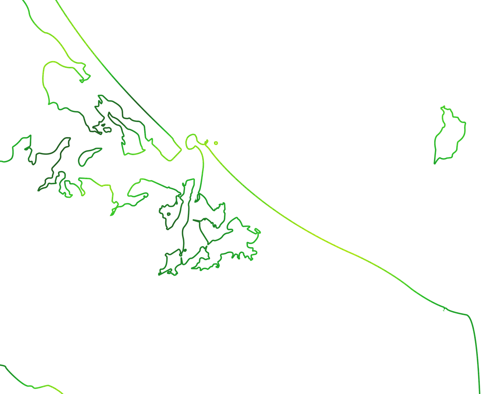

MAP
On our map you will find local solutions where you are able to recycle your e-waste safely. Click the green locators to visit their website and learn more

On our map you will find local solutions where you are able to recycle your e-waste safely. Click the green locators to visit their website and learn more